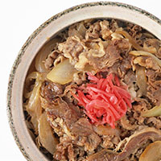

Todays PICKUP
本日の特別レシピ

材料 2人分
- 牛肉切り落とし 200〜300g
- 玉ねぎ 1個
- ☆水300ml
- ☆だしの素小さじ1/2
- ☆醤油大さじ3
- ☆みりん大さじ2
- ☆砂糖大さじ1
作り方
- 1.玉ねぎは1cmくらいの幅に切ります。牛肉は食べやすい大きさに切ります。
- 2.鍋に☆の材料をいれ、煮立たせます。
- 3.煮立ったら、肉を加え、火を通します。
＊アクがでたら、取り除きましょう。
- 4.肉に火が通ったら、玉ねぎを加え、柔らかくなるまで煮込みます。
- 5.玉ねぎか柔らかくなれば出来上がり*\(^o^)/*
- 6.ご飯の上に盛れば、牛丼の完成☆
汁はお好みでかけてください！